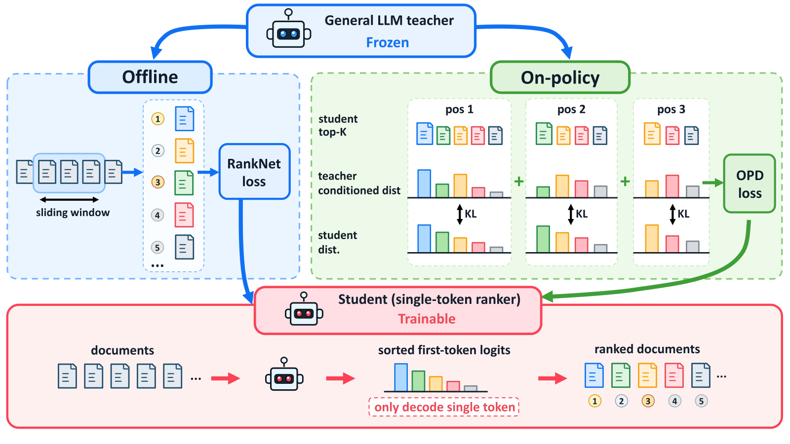
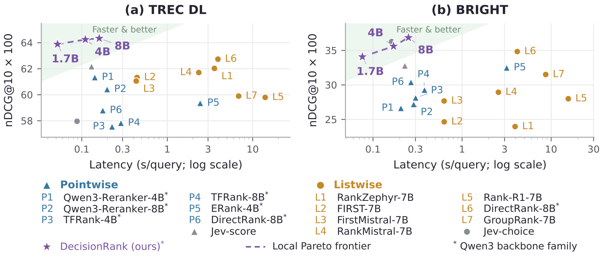

Contents · 6 sections
1First: what "first-token" reranking means2Core mechanism: the teacher grades the student's own ranking, position by position3Results: accurate and fast, but the new signal adds little4Limitations as I see them5How a search team could try it6VerdictSHARE
LLM listwise reranking works well but is slow, because the model generates document IDs one by one. Scoring every document ID at the first token and sorting once is far faster; the hard part is teaching such a student the ranking skill of a large teacher. DecisionRank lets the student sort documents by its own scores first. At each position of that list, with the earlier positions fixed, the teacher gives a probability distribution over which remaining document should come next, and the student's scores over the remaining documents are turned into a distribution and pulled toward it. A 1.7B student beats its 27B teacher on TREC DL (63.89 vs 62.97, Tables 3 and 5), and on TREC DL the 8B student outperforms the same-size generative listwise reranker DirectRank-8B while running 24.5 times faster (Table 1, §3.2.2).
Search ranking teams struggling with LLM reranking latency should read this. What is genuinely new is a training signal: the teacher scores, position by position, the order the student itself produced, and that signal lands directly on the scores used at inference. Two caveats matter, though. The existing offline distillation alone already delivers a similar gain, and the new signal adds only 0.5–0.9 points on top of offline distillation. On the medical reasoning retrieval benchmark R2MED the student is more than 3 points below the teacher, and on the reasoning-heavy BRIGHT benchmark it also trails slightly.
First: what "first-token" reranking means
A generative listwise reranker (the RankGPT family) feeds the query and 100 candidates to the model and has it write out the ranking, one document ID after another, from most to least relevant. Ranking 100 documents takes hundreds of decoded tokens, often with several sliding-window calls.
The earlier single-token reranker FIRST (2024) reads the output differently, and this paper's student follows it. Each candidate gets a two-letter ID that is exactly one token in the vocabulary, 100 IDs in total. After reading all candidates, the model does a single forward pass and looks at the logits of those 100 ID tokens at the first output position. A higher logit means the model would rather put that document first; sorting the 100 scores gives the full ranking (§2.1, Eq. 1). The paper calls such a model, which outputs scores directly instead of text, a decision model. This way of reading scores is not new here; what is new is how those scores are trained.
This is fast, but it creates a training mismatch. The teacher is generative: its preferences live in a chain of conditional choices like "A and B are placed, who comes next?". The student has only one set of first-position scores. An illustration:
| Illustration | How the teacher expresses preference | What the student has |
|---|---|---|
| Position 1 | Picks A out of 100 | 100 scores, A highest |
| Position 2 | A is placed; picks C out of the remaining 99 | The same 100 scores, minus A |
| Position 3 | A and C are placed; picks B out of the remaining 98 | The same 100 scores, minus A and C |
Learning only the teacher's first-position distribution wastes the later conditional choices; teaching the student to generate IDs one by one trains something other than the first-position scores used at inference (§1).
Core mechanism: the teacher grades the student's own ranking, position by position
DecisionRank adds the paper's new signal to an existing offline signal, both acting on the same first-position scores (Figure 2).

The new signal is the paper's contribution, item-space OPD (on-policy distillation). In on-policy distillation the teacher grades the student's own current output, and the student trains on that feedback; "item-space" means the alignment happens over candidate documents. Each training iteration proceeds in four steps (§2.2):
- The student sorts by its current scores and takes its top K=20, giving its own list, say A, C, B, ...
- Those 20 documents and the query go to the teacher, which uses its own numeric IDs; the student's list is rewritten in those IDs and inserted as the teacher's "already written answer" (teacher forcing). In one forward pass the teacher yields the conditional distribution at every position: at position 2, with A placed, which of the remaining 19 should come next; at position 3, with A and C placed, which of the remaining 18; and so on. At position t, the teacher gives each remaining document a positive conditional score a, which is divided by the sum over the remaining documents to form a distribution (Eq. 3). The two ID schemes differ, but both point to the same documents, so the comparison happens at the document level rather than the token level (§2.1). One caution for reproduction: the paper does not write out how a is computed from token probabilities when a numeric teacher ID spans several tokens, so that step has to be filled in.
- The student generates nothing further: re-applying softmax to the same first-position scores over just the remaining documents gives its choice distribution at that position (Eq. 2).
- Both distributions cover the same remaining documents, so a reverse KL is computed at each position, averaged over positions 2 to 19 (Eqs. 4–5), and added to the RankNet loss described next with weight λ=0.1 (Appendix A).
The other part is existing offline ranking supervision, following FIRST: before training, the teacher first ranks each query's candidates once by generative ranking, giving a fixed full ranking; during training, RankNet makes the student's scores respect the pairwise orderings in that ranking. Each pair's weight is the difference of the two documents' rank discounts, with discount 1/log2(1+rank), the same form as in nDCG, so the student learns to get the head right first (§2.3, Eq. 6).
An analogy: offline supervision is like handing the student an answer key. Item-space OPD is like a teacher sitting beside the student, looking at the student's own ranking and saying at each position, "given the places you have already fixed, here is what I would pick." When the student's ranking changes, the teacher sees the new ranking next time, so the feedback changes too. Hoot says

- position 2: both sides compare only over C, B, D
- already fixed in the prefix
- the student's pick at this position
- other documents in this position's distribution
- Student side (illustrative): first-position scores for A, C, B, D are 2, 1, 0.5, 0. At position 2 A is fixed, so softmax is redone over C, B, D: 0.51, 0.31, 0.19.
- Teacher side: reading prefix A, it gives C, B, D conditional scores and normalizes them. Both land on the same three documents, and reverse KL is taken position by position; the teacher prefers B at position 2, so training raises B's score. When the student's ranking changes, the prefix the teacher sees changes too.
DecisionRank's contribution is item-space OPD: the teacher scores, position by position, the list the student itself currently produces, aligned at the document level. Each row is a position; grey cells are the fixed prefix, red cells the documents still available there. Source: illustrative example of the paper's §2.2 four steps and Eqs. 2–5
Because the alignment is over which document, not over vocabulary tokens, the teacher can use numeric IDs while the student uses letter IDs, so the teacher can be Gemma-4-31B from another model family, or ReasonRank-32B, which is built on Qwen2.5 (§2.1, §3.5). Training data is just 10,000 MS MARCO queries plus 6,000 synthetic ReasonEmbed queries (§3.1.1).
Results: accurate and fast, but the new signal adds little
Main results are in Table 1. All four benchmarks rerank 100 candidates; the metric is nDCG@10×100:
| Method | TREC DL | BEIR | BRIGHT | R2MED |
|---|---|---|---|---|
| Qwen3.8-27B teacher (sliding-window generation) | 62.97 | 57.26 | 37.42 | 46.66 |
| DirectRank-8B (generative listwise) | 62.92 | 55.78 | 35.87 | 44.50 |
| ERank-32B (pointwise) | 59.06 | 54.78 | 35.33 | 41.20 |
| DecisionRank-1.7B | 63.89 | 56.65 | 34.08 | 38.45 |
| DecisionRank-8B | 64.34 | 57.98 | 36.86 | 43.55 |
(The teacher row is from Table 3 and serves only as a reference; the rest are from Table 1.) On general retrieval, even the smallest 1.7B student beats every compared reranker in Table 1, including 32B models, which shows that one-pass scoring is not inherently weaker. Reasoning-heavy retrieval is different: the 8B student is the best of all rerankers in Table 1 on BRIGHT, but on R2MED it is almost 1 point below DirectRank-8B and more than 3 points below the teacher, so the teacher's reasoning ability does not fully transfer.
For speed, reranking 100 candidates on a B200, the 8B student is 24.5 times faster than DirectRank-8B on TREC DL and 16.7 times faster on BRIGHT, and the three students form the effectiveness–latency frontier among local models (Figure 3). The text gives only the speed-up ratios; absolute milliseconds have to be read off the figure.

The evidence for item-space OPD itself is in Tables 2 and 3. Table 2 adds five different teacher signals on the same RankNet base, and only item-space OPD improves all four benchmarks: TREC DL +0.90, BEIR +0.59, BRIGHT +0.80, R2MED +0.49. The other four each have their own weakness. Offline KL does train the first-position scores, but it learns only from the teacher's first choice, and it drops 1.45 on TREC DL. The two methods that teach the student to generate the ID sequence (AR SFT and AR OPD) keep RankNet on the first-position scores, but their extra supervision is an autoregressive sequence objective that does not match first-token inference, and both dip slightly on general retrieval. Listwise GRPO, which uses nDCG@10 as a reward, gives the whole ranking one total score without saying which position was wrong, and drops 0.33 on R2MED. All four improve BRIGHT, for example Offline KL +0.79, but only AR SFT and AR OPD improve both reasoning-intensive benchmarks; the advantage of item-space OPD is mainly that it rises steadily on all four benchmarks.
Table 3 separates the two signals. With zero-shot first-position scoring, the 8B student gets only 47.23 on TREC DL; RankNet alone lifts it to 63.44, item-space OPD alone to 63.80, and the two together to 64.34. So either signal alone captures the bulk of the gain, sixteen points or so; item-space OPD alone is slightly better than RankNet alone on TREC DL and BEIR but slightly worse on BRIGHT and R2MED, and together they are best on all four benchmarks, which shows they are complementary. Table 4 checks three random seeds: the 8B student goes from 63.40±0.06 to 64.21±0.14 on TREC DL and from 36.08±0.11 to 36.85±0.08 on BRIGHT; the gain is much larger than the spread, so it is not noise.
A side result concerns whether the confidence can be trusted. The paper trains one 8B student with Qwen3.8-27B as teacher and another with Gemma-4-31B. Take two documents for the same query with different relevance labels, pass the difference of the student's two scores through a sigmoid as the probability that one is more relevant. On the teacher side, take its first-position probabilities for the two document IDs and use one document's share (its probability divided by the sum of both) as the preference probability, not its full ranking. Then compare against the labelled order to see whether high-probability judgements are actually right more often; the gap is measured by calibration error, ECE (Appendix C.2). The 8B students have lower ECE than their teachers on both TREC DL and BRIGHT (Figure 4), without any calibration objective in training. The exact values appear only in the figure.
Limitations as I see them
- Reasoning-heavy retrieval still trails the teacher. On R2MED the 8B student scores 43.55 against the teacher's 46.66, and on BRIGHT 36.86 against 37.42 (Table 3); with Gemma-4-31B as teacher the BRIGHT gap is larger, 37.28 against 39.94 (Table 5). This means "small student beats big teacher" mainly happens on general retrieval such as TREC DL; on reasoning-heavy retrieval the one exception is that with ReasonRank-32B as teacher, the 4B and 8B students beat it on BRIGHT (Table 5).
- One forward pass must read all 100 documents. The ID pool has exactly 100 single-token IDs, so 100 is the candidate ceiling; to fit the context each passage is truncated to 128 tokens on TREC DL and 384 tokens elsewhere (Appendix A). Long-document settings need harsher truncation or a coarse pre-ranking, and the paper does not measure what truncation costs.
- Training cost is not reported. Every item-space OPD step needs a forward pass of a 27B–32B teacher, but the paper gives no training time or compute, and no cost comparison between offline distillation and joint training, so it is hard to judge whether the sub-1-point gain from adding item-space OPD is worth it.
How a search team could try it
- Start with the cheapest step: use your existing LLM reranker as the teacher, rank candidates for a batch of queries offline, and train a first-position-score student with RankNet. Per Table 3, this step alone captures most of the gain and needs no online teacher calls during training.
- On the same data, add item-space OPD: take the student's top 20, give them to the teacher for one teacher-forced forward pass, compute reverse KL position by position, and start tuning λ from 0.1. Log the extra teacher compute per training step.
- Compare nDCG@10 and single-query latency offline on two groups: ordinary queries, and long-tail queries that need reasoning. The long-tail reasoning queries are where the student is most likely to trail the teacher.
- Check candidate count and truncation: if production has more than 100 candidates or long documents, first measure the quality loss from truncating to 128/384 tokens before deciding to ship.
Verdict
| Dimension | Judgment | Reason |
|---|---|---|
| Novelty | Medium-high | Turns on-policy distillation into per-position alignment over candidate documents, acting directly on the inference scores |
| Evidence | Fairly solid | Five training objectives on the same base, three seeds, three teacher families |
| Increment | Small | Either signal alone gives a large gain; item-space OPD adds only 0.5–0.9 points on top of offline distillation |
| Practical value | High | Ranks 100 documents in one forward pass, 16.7–24.5 times faster than DirectRank-8B |
| Main risk | Reasoning queries and long documents | Trails the teacher on both reasoning benchmarks; 100-candidate ceiling and truncation |
How did this read for you?
Hoot made a note. Thanks for the feedback.
One tap, no sign-in; tap again to undo. Only anonymous counts are kept, never who you are.
Discussion
Add experiment details, reproduction notes or a different take. Requires a GitHub sign-in.
Loading the discussion…